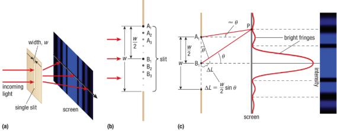
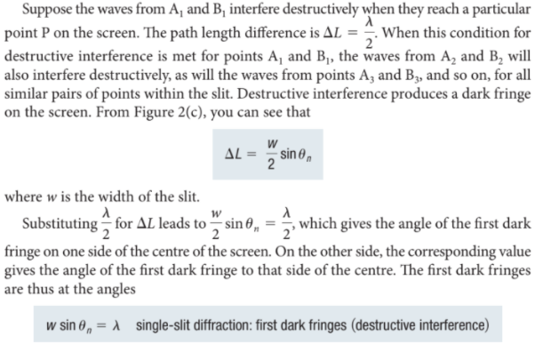
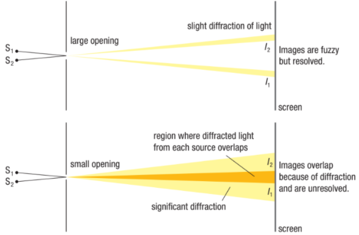
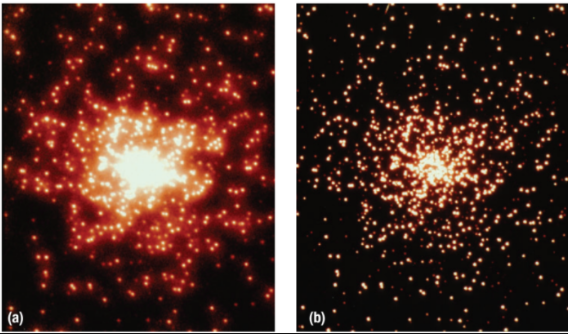

Callout
Monochromatic light passing through a single slit has a central maximum and many smaller and dimmer maxima on either side. Light passing through a single slit forms a diffraction pattern somewhat different from those formed by double slits or diffraction gratings.
While investigating this configuration, assume that the following conditions exist:
When the slit is divided in half, coherent waves that interfere with each other appear as the light passes through the slit. The points in one half are labelled A, and the points in the other half are labelled B.


The resolution of an optical device is the device’s ability to separate closely spaced objects into distinctly different images. Light passing through a small opening is diffracted, and smaller openings produce greater diffraction.
When light from two objects passes simultaneously through the same opening, the light from both sources is diffracted.

With a large opening, the images from two light sources are fuzzy but distinguishable. With a smaller opening, the images overlap and are difficult to distinguish.

(a) When the resolution of an optical device is not sharp enough, stars that are in close proximity appear blurry. (b) When the resolution is sufficient, more individual stars can be clearly seen.
Explain how a single-slit interference pattern differs from a double-slit interference pattern.